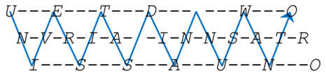
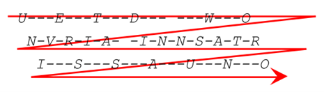

8. Transposisi Route
Transposisi Route merupakan metode yang dilakukan dengan cara pesan disusun dalam grid (biasanya persegi atau persegi panjang), dan huruf-huruf pesan ditempatkan di dalam sel-sel grid sesuai dengan suatu pola atau rute tertentu. Setelah pesan disusun dalam grid, pesan diambil dengan mengikuti pola atau rute yang telah ditentukan, seperti zigzag, spiral, atau pola lainnya.
Salah satu contoh teknik transposisi terkenal adalah Union Route yang dipakai oleh Tentara Union selama Perang Saudara Amerika. Dengan cara pesan disusun dalam grid, lalu diambil kembali dengan mengikuti pola atau rute tertentu. Ini memberikan tingkat keamanan tambahan dalam komunikasi militer. Penyandian Transposisi Route dilakukan dengan cara menuliskan teks asli secara kolom dari atas kebawah dalam sebuah kisi-kisi imajiner dengan ukuran yang telah disepakati. Teks sandinya dibaca dengan arah (route) sesuai perjanjian, misalnya :
Analogi Transposisi Railfence
Mari kita analogikan transposisi railfence dengan menyusun pesan di pagar besi sebagai proses enkripsinya dan membaca pesan tersembunyi dalam sebuah pagar besi sebagai proses dekripsinya
Enkripsi: Menyusun Pesan di Pagar Besi
Bayangkan Anda memiliki sebuah pesan yang ingin Anda sembunyikan, seperti “HELLO WORLD”. Untuk mengenkripsi pesan ini dengan algoritma transposisi Rail Fence, Kita akan menggunakan sebuah pagar besi dengan beberapa tingkat atau baris (rails).
Misalnya, jika Anda menggunakan 3 tingkat (rails), maka Anda akan menyusun pesan Anda dengan cara berikut:
Mulailah dari tingkat pertama, lalu turun ke tingkat kedua, kemudian ke tingkat ketiga, dan kembali ke tingkat kedua, lalu ke tingkat pertama, dan seterusnya.
Tuliskan huruf-huruf pesan di sepanjang jalur ini.
Jadi, pesan “HELLO WORLD” akan disusun seperti ini :
H - - - O - - - R - -
- E - L - W - L - D -
- - L - - - O - - - - Sekarang, Kita membaca huruf-huruf tersebut dari tingkat pertama ke tingkat terakhir:
- Tingkat pertama : “HOR”
- Tingkat kedua : “ELWLD”
- Tingkat ketiga : “LO”
Dengan Menggabungkan semua huruf-huruf ini, Kita akan mendapatkan pesan terenkripsi atau ciphertext: “HOR ELWLD LO”
Dekripsi: Membaca Pesan dari Pagar Besi
Sekarang, bayangkan seseorang menerima pesan terenkripsi “HOR ELWLD LO” dan ingin membacanya. Untuk mendekripsi pesan tersebut, mereka harus menggunakan pagar besi yang sama dengan jumlah tingkat yang sama (3 tingkat dalam contoh ini).
Pertama, mereka menggambar garis-garis pada pagar besi sesuai dengan pola Rail Fence.
Lalu, mereka menempatkan huruf-huruf pesan terenkripsi kembali ke jalur-jalur sesuai dengan urutan.
Jadi, mereka akan menempatkan huruf-huruf dengan cara berikut:
H - - - O - - - R - -
- E - L - W - L - D -
- - L - - - O - - - - Sekarang, mereka bisa membaca pesan asli dengan mengikuti jalur dari tingkat pertama ke tingkat terakhir dan kembali:
- “H” (tingkat pertama)
- “E” (tingkat kedua)
- “L” (tingkat ketiga)
- “L” (kembali ke tingkat kedua)
- “O” (tingkat pertama)
- “W” (tingkat kedua)
- “O” (tingkat ketiga)
- “R” (kembali ke tingkat kedua)
- “L” (tingkat pertama)
- “D” (tingkat kedua)
Dengan menggabungkan semua huruf-huruf ini, mereka mendapatkan hasil dekripsi atau pesan asli : “HELLO WORLD”
Contoh Soal
Plainteks : UNIVERSITAS DIAN NUSWANTORO
Kunci : 3 baris (spasi ditulis)Langkah mengerjakan :
Susun huruf-huruf plainteks ke dalam pola zigzag menggunakan 3 baris

keterangan : jika di plainteks ada spasi, maka spasi di tulis, contohnya setelah huruf S pada kata UNIVERSITAS ada pengosongan tempat itu adalah spasi.
Baca huruf-huruf dari baris-baris tersebut secara berurutan dari baris atas ke baris bawah

Hasil Ciphertext : UETD WONVRIA INNSATRISSAUNO
Implementasi Pada Python
Masukkan Plaintext
plainText = input("Plaintext : ")Masukkan Kunci atau Jumlah Baris
railFenceKey = int(input("Kunci: "))Proses Enkripsi
- Membuat Matriks Kosong Sesuai Dengan Jumlah Baris (kunci)
rails = [[' ' for _ in range(len(plainText))] for _ in
range(railFenceKey)]- Menentukan Arah Pola Zig-Zag Dari Huruf-Huruf Dalam Plaintext, jika direction = 1 maka pola turun, jika -1 maka pola naik
i, j = 0, 0
direction = 1 - Menempatkan karakter-karakter dari plainText ke dalam matriks dalam pola zigzag sesuai dengan kunci Rail Fence
for char in plainText:
rails[i][j] = char
if i == 0:
direction = 1
elif i == railFenceKey - 1:
direction = -1
i += direction
j += 1For More Detail :
for char in plainText: Setiap karakter dalam teks yang ingin dienkripsi akan diproses satu per saturails[i][j] = char: Karakter saat ini ditempatkan di baris [i] dan kolom [j] dari matriks railsif i == 0: direction = 1: Jika berada di baris teratas, ubah arah pergerakan ke bawahelif i == railFenceKey - 1: direction = -1: Jika berada di baris terbawah, ubah arah pergerakan ke atasi += direction: Indeks baris [i] ditambah atau dikurangi sesuai dengan arah pergerakan (ke bawah atau ke atas) Mengupdate indeks kolom [j] untuk pindah ke karakter berikutnya:j += 1: Indeks kolom [j] selalu bertambah satu untuk setiap karakter
- Membentuk Teks Terenkripsi Berdasarkan Pola Zig-Zag
enkripsi_teks = '\n'.join([''.join(row) for row in rails])
print("* RAIL FENCE: ")
print(enkripsi_teks)Fore More Detail :
rowmerepresentasikan setiap baris dalam matriks rails.''.join(row): Menggabungkan semua karakter dalam baris row menjadi satu stringfor row in rails: Ini adalah list comprehension yang mengiterasi setiap baris dalam matriks rails'\n'.join([...]): Menggabungkan semua string dalam daftar hasil dari list comprehension di langkah sebelumnya menjadi satu string besar
- Mempersiapkan daftar untuk setiap baris (rail) dan mengatur agar kita mulai dari baris pertama dengan pergerakan ke bawah.
rails = [[] for _ in range(railFenceKey)]
index = 0
direction = 1For More Detail :
rails = [[] for _ in range(railFenceKey)]: Membuat daftar berisi daftar kosong untuk setiap baris (rail) sesuai dengan jumlah baris yang ditentukan oleh railFenceKeyindex = 0: Menentukan bahwa kita mulai dari baris pertama (index 0).direction = 1: Menentukan bahwa pergerakan awalnya ke bawah (nilai 1).
- Menempatkan karakter-karakter dari plainText ke dalam daftar rails dalam pola zigzag, mengubah arah pergerakan ketika mencapai baris pertama atau terakhir
for char in plainText:
rails[index].append(char)
if index == 0:
direction = 1
elif index == railFenceKey - 1:
direction = -1
index += directionFor More Detail :
for char in plainText: Looping untuk Mengiterasi setiap karakter dalam plainText satu per saturails[index].append(char): Menambahkan karakter char ke daftar rails pada posisi index saat iniif index == 0: direction = 1: Jika index adalah 0 (baris pertama), ubah arah pergerakan ke bawah (direction = 1)elif index == railFenceKey - 1: direction = -1: Jika index adalah railFenceKey - 1 (baris terakhir), ubah arah pergerakan ke atas (direction = -1)index += direction: Menambah atau mengurangiindexsesuai dengandirection
- menggabungkan karakter-karakter yang telah disusun dalam matriks rails menjadi satu string yang merupakan teks terenkripsi (ciphertext)
enkripsi_teks = "".join(["".join(rail) for rail in rails])
print("CIPHERTEXT : " + enkripsi_teks)For More Detail :
["".join(rail) for rail in rails]: List comprehension yang menghasilkan daftar string, di mana setiap string adalah satu baris dari matriks rails"".join([...]): Menggabungkan semua string dalam daftar menjadi satu string besar tanpa pemisah"".join(rail): Menggabungkan semua karakter dalam baris rail menjadi satu string- Hasilnya adalah satu string panjang yang merupakan teks terenkripsi (enkripsi_teks).
CIPHERTEXT : UETD WONVRIA INNSATRISSAUNOProses Dekripsi
- Mempersiapkan daftar untuk setiap baris (rail) dan mengatur agar kita mulai dari baris pertama dengan pergerakan ke bawah
rails = [[] for _ in range(railFenceKey)]
index = 0
direction = 1For More Detail :
rails = [[] for _ in range(railFenceKey)]: Membuat daftar berisi daftar kosong untuk setiap baris (rail) sesuai dengan jumlah baris yang ditentukan oleh railFenceKey Membuat placeholder untuk menyiapkan “kotak-kotak” yang akan mengorganisir karakter-karakter terenkripsi sehingga dapat didekripsi kembali dengan benarindex = 0: Menentukan bahwa kita mulai dari baris pertama (index 0)direction = 1: Menentukan bahwa pergerakan awalnya ke bawah (nilai 1)
- Mempersiapkan tempat untuk karakter-karakter dari teks terenkripsi agar bisa ditempatkan di posisi yang benar selama proses dekripsi
for char in enkripsi_teks:
rails[index].append(None)
if index == 0:
direction = 1
elif index == railFenceKey - 1:
direction = -1
index += directionFor More Detail :
if index == 0: direction = 1: Mengiterasi setiap karakter dalam enkripsi_teks satu persatu.elif index == railFenceKey - 1: direction = -1: Jika index adalah railFenceKey - 1 (baris terakhir), ubah arah pergerakan ke atas (direction = -1)index += direction: Menambah atau mengurangi index sesuai dengan direction. Jika direction = 1 bergerak ke bawah sedangkan direction = -1 bergerak ke atas
- Menempatkan karakter-karakter dari teks terenkripsi kembali ke posisi yang benar dalam matriks rails, sesuai dengan placeholder (None) yang telah ditandai sebelumnya
index_char = 0
for rail in rails:
for i in range(len(rail)):
rail[i] = enkripsi_teks[index_char]
index_char += 1For More Detail :
index_char: Melacak posisi karakter dalam enkripsi_teks.for rail in rails: Looping untuk mengiterasi setiap baris dalam matriks rails.for i in range(len(rail)):: Mengiterasi setiap posisi dalam baris rail yang memiliki placeholder.rail[i] = enkripsi_teks[index_char]: Menempatkan karakter dari enkripsi_teks pada posisi yang sesuai dalam rail.index_char += 1: Meningkatkan index_char untuk berpindah ke karakter berikutnya dalam enkripsi_teks.
- Membaca kembali karakter-karakter dari matriks rails dalam urutan zigzag yang benar dan menyusunnya menjadi teks asli
index = 0
direction = 1
dekripsi_teks = []For More Detail :
index: Melacak baris saat ini dalam matriks railsdirection: Menentukan arah pergerakan (ke bawah atau ke atas)dekripsi_teks = []: Daftar yang akan menyimpan karakter karakter teks asli dalam urutan yang benar.
- Membaca kembali karakter-karakter dari matriks rails dalam urutan zigzag yang benar dan menyusunnya menjadi teks asli
for _ in range(len(enkripsi_teks)):
dekripsi_teks.append(rails[index].pop(0))
if index == 0:
direction = 1
elif index == railFenceKey - 1:
direction = -1
index += directionFor More Detail :
for _ in range(len(enkripsi_teks)):: Mengiterasi sebanyak panjang enkripsi_teks untuk memastikan semua karakter diproses.dekripsi_teks.append(rails[index]): Mengambil karakter pertama dari baris index dalam rails dan menambahkannya ke dekripsi_teks.pop(0): pop(0) menghapus dan mengembalikan elemen pertama dari baris indexif index == 0: direction = 1: Jika index adalah 0 (baris pertama), ubah arah pergerakan ke bawah (direction = 1)elif index == railFenceKey - 1: direction = -1: Jika index adalah railFenceKey - 1 (baris terakhir), ubah arah pergerakan ke atas (direction = -1)index += direction: Mengupdate indeks baris
- Menggabungkan karakter-karakter yang telah disusun kembali dalam dekripsi_teks menjadi satu string yang merupakan teks asli hasil dekripsi
railFenceDecryption = "".join(dekripsi_teks)
print(" DECRYPTED : " + railFenceDecryption)For More Detail :
''.join(dekripsi_teks): Menggabungkan semua elemen dalam dekripsi_teks menjadi satu string tanpa pemisah.- Variabel
railFenceDecryptionakan menyimpan string hasil dek
HASIL DECRYPTED : UNIVERSITAS DIAN NUSWANTORO